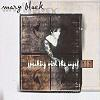

Celtic Lyrics Corner > Artists & Groups > Mary Black > Speaking With The Angel > Broken Wings
|  | Broken Wings |
| Credits : | Dougie MacLean |
| Appears On : | Speaking With The Angel |
| Language : | English |
| Other Versions : | " Broken Wings " on Cherish The Ladies' album New Day Dawning |
Lyrics :
A tall tree, turn and face the west
Oh we're running with the wind
A high clifftop, we're waiting with the rest
For this journey to begin
Chorus
:
But these broken wings won't fly
These broken wings won't fly
These broken wings won't fly at all
And oh how we laugh, but maybe we should crawl
And ask to be excused
We shout loudly, have answers to it all
Oh but we have been refused
(Chorus)
Girl child, you're dancing with the stream
Growing with the silver trees
Your young questions, you ask me what it means
Oh but I am not at ease
(Chorus 2x)